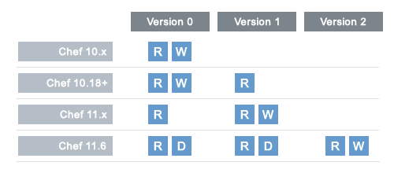
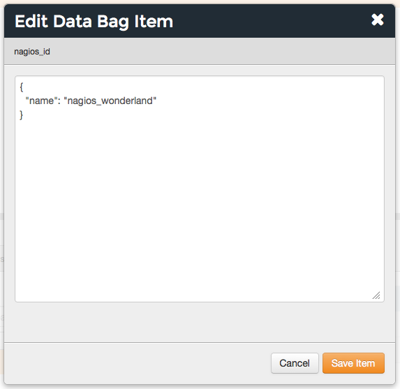

Manage Secrets¶
One way to manage secrets used by Chef is with data bags.
Data Bags¶
A data bag is a global variable that is stored as JSON data and is accessible from a Chef server. A data bag is indexed for searching and can be loaded by a recipe or accessed during a search.
Create a Data Bag¶
A data bag can be created in two ways: using knife or manually. In general, using knife to create data bags is recommended, but as long as the data bag folders and data bag item JSON files are created correctly, either method is safe and effective.
Using Knife¶
knife can be used to create data bags and data bag items when the knife data bag subcommand is run with the create argument. For example:
$ knife data bag create DATA_BAG_NAME (DATA_BAG_ITEM)
knife can be used to update data bag items using the from file argument:
$ knife data bag from file BAG_NAME ITEM_NAME.json
As long as a file is in the correct directory structure, knife will be able to find the data bag and data bag item with only the name of the data bag and data bag item. For example:
$ knife data bag from file BAG_NAME ITEM_NAME.json
will load the following file:
data_bags/BAG_NAME/ITEM_NAME.json
Continuing the example above, if you are in the “admins” directory and make changes to the file charlie.json, then to upload that change to the Chef server use the following command:
$ knife data bag from file admins charlie.json
In some cases, such as when knife is not being run from the root directory for the chef-repo, the full path to the data bag item may be required. For example:
$ knife data bag from file BAG_NAME /path/to/file/ITEM_NAME.json
Manually¶
One or more data bags and data bag items can be created manually under the data_bags directory in the chef-repo. Any method can be used to create the data bag folders and data bag item JSON files. For example:
$ mkdir data_bags/admins
would create a data bag folder named “admins”. The equivalent command for using knife is:
$ knife data bag create admins
A data bag item can be created manually in the same way as the data bag, but by also specifying the file name for the data bag item (this example is using vi, a visual editor for UNIX):
$ vi data_bags/admins/charlie.json
would create a data bag item named “charlie.json” under the “admins” sub-directory in the data_bags directory of the chef-repo. The equivalent command for using knife is:
$ knife data bag create admins charlie
Store Data in a Data Bag¶
When the chef-repo is cloned from GitHub, the following occurs:
- A directory named data_bags is created.
- For each data bag, a sub-directory is created that has the same name as the data bag.
- For each data bag item, a JSON file is created and placed in the appropriate sub-directory.
The data_bags directory can be placed under version source control.
When deploying from a private repository using a data bag, use the deploy_key option to ensure the private key is present:
{
'id': 'my_app',
... (truncated) ...
'deploy_key': 'ssh_private_key'
}
where ssh_private_key is the same SSH private key as used with a private git repository and the new lines converted to \n.
Directory Structure¶
All data bags are stored in the data_bags directory of the chef-repo. This directory structure is understood by knife so that the full path does not need to be entered when working with data bags from the command line. An example of the data_bags directory structure:
- data_bags
- admins
- charlie.json
- bob.json
- tom.json
- db_users
- charlie.json
- bob.json
- sarah.json
- db_config
- small.json
- medium.json
- large.json
where admins, db_users, and db_config are the names of individual data bags and all of the files that end with .json are the individual data bag items.
Data Bag Items¶
A data bag is a container of related data bag items, where each individual data bag item is a JSON file. knife can load a data bag item by specifying the name of the data bag to which the item belongs and then the filename of the data bag item. The only structural requirement of a data bag item is that it must have an id:
{
/* This is a supported comment style */
// This style is also supported
"id": "ITEM_NAME",
"key": "value"
}
where
- key and value are the key:value pair for each additional attribute within the data bag item
- /* ... */ and // ... show two ways to add comments to the data bag item
Encrypt a Data Bag Item¶
A data bag item may be encrypted using shared secret encryption. This allows each data bag item to store confidential information (such as a database password) or to be managed in a source control system (without plain-text data appearing in revision history). Each data bag item may be encrypted individually; if a data bag contains multiple encrypted data bag items, these data bag items are not required to share the same encryption keys.
Note
Because the contents of encrypted data bag items are not visible to the chef-server, search queries against data bags with encrypted items will not return any results.
Encryption Versions¶
The manner by which a data bag item is encrypted depends on the version of the chef-client. See the following:
where R is read, W is write, and D is disable. (Disabling support for older encryption version formats will be in the next version and, if desired, will require a configuration change.)
For version 0 (default, through chef-client version 10.18):
- An encrypted data bag item is written using YAML as the serialization format
- Base64 encoding is used to preserve special characters in encrypted contents
- Data is encrypted using AES-256-CBC (as defined by the OpenSSL package in the Ruby Standard Library)
- The chef-client uses shared secret encryption; an encrypted file can only be decrypted by a node or a user with the same shared secret
- A recipe can load encrypted data as long as the shared secret is present in a file on the node or is accessible from a URI path
- Only the values of a data bag item are decrypted; keys are still searchable. The values associated with the id key of a data bag item are not encrypted (because they are needed when tracking the data bag item)
For version 1 (default, starting with chef-client version 11.0):
- An encrypted data bag item is written using JSON as the serialization format
- Base64 encoding is used to preserve special characters in encrypted contents
- Data is encrypted using AES-256-CBC (as defined by the OpenSSL package in the Ruby Standard Library)
- A data bag item is encrypted using a random initialization vector each time a value is encrypted, which helps protect against some forms of cryptanalysis
- The chef-client uses shared secret encryption; an encrypted file can only be decrypted by a node or a user with the same shared secret
- A recipe can load encrypted data as long as the shared secret is present in a file on the node or is accessible from a URI path
- Only the values of a data bag item are decrypted; keys are still searchable. The values associated with the id key of a data bag item are not encrypted (because they are needed by the chef-client when tracking the data bag item)
For version 2 (available, starting with chef-client version 11.6):
- Same as version 1
- Can disable version 0 and version 1 data bag item encryption formats
- Adds Encrypt-then-MAC(EtM) protection
Knife Options¶
knife can encrypt and decrypt data bag items when the knife data bag subcommand is run with the create, edit, from file, or show arguments and the following options:
| Option | Description |
|---|---|
| --secret SECRET | The encryption key that is used for values contained within a data bag item. If secret is not specified, the chef-client looks for a secret at the path specified by the encrypted_data_bag_secret setting in the client.rb file. |
| --secret-file FILE | The path to the file that contains the encryption key. |
Secret Keys¶
Encrypting a data bag item requires a secret key. A secret key can be created in any number of ways. For example, OpenSSL can be used to generate a random number, which can then be used as the secret key:
$ openssl rand -base64 512 | tr -d '\r\n' > encrypted_data_bag_secret
where encrypted_data_bag_secret is the name of the file which will contain the secret key. For example, to create a secret key named “my_secret_key”:
$ openssl rand -base64 512 | tr -d '\r\n' > my_secret_key
The tr command eliminates any trailing line feeds. Doing so avoids key corruption when transferring the file between platforms with different line endings.
Encrypt¶
A data bag item is encrypted using a knife command similar to:
$ knife data bag create passwords mysql --secret-file /tmp/my_data_bag_key
where “passwords” is the name of the data bag, “mysql” is the name of the data bag item, and “/tmp/my_data_bag_key” is the path to the location in which the file that contains the secret-key is located. knife will ask for user credentials before the encrypted data bag item is saved.
Verify Encryption¶
When the contents of a data bag item are encrypted, they will not be readable until they are decrypted. Encryption can be verified with a knife command similar to:
$ knife data bag show passwords mysql
where “passwords” is the name of the data bag and “mysql” is the name of the data bag item. This will return something similar to:
id: mysql
pass:
cipher: aes-256-cbc
encrypted_data: JZtwXpuq4Hf5ICcepJ1PGQohIyqjNX6JBc2DGpnL2WApzjAUG9SkSdv75TfKSjX4
iv: VYY2qx9b4r3j0qZ7+RkKHg==
version: 1
user:
cipher: aes-256-cbc
encrypted_data: 10BVoNb/plkvkrzVdybPgFFII5GThZ3Op9LNkwVeKpA=
iv: uIqKHZ9skJlN2gpJoml6rQ==
version: 1
Decrypt¶
An encrypted data bag item is decrypted with a knife command similar to:
$ knife data bag show --secret-file /tmp/my_data_bag_key passwords mysql
that will return JSON output similar to:
{
"id": "mysql",
"pass": "thesecret123",
"user": "fred"
}
Edit a Data Bag Item¶
A data bag can be edited in two ways: using knife or by using the Chef management console.
Using Knife¶
Use the edit argument to edit the data contained in a data bag. If encryption is being used, the data bag will be decrypted, the data will be made available in the $EDITOR, and then encrypted again before saving it to the Chef server.
To edit an item named “charlie” that is contained in a data bag named “admins”, enter:
$ knife data bag edit admins charlie
to open the $EDITOR. Once opened, you can update the data before saving it to the Chef server. For example, by changing:
{
"id": "charlie"
}
to:
{
"id": "charlie",
"uid": 1005,
"gid": "ops",
"shell": "/bin/zsh",
"comment": "Crazy Charlie"
}
Using Chef Manage¶
To edit a data bag item:
Open the Chef management console.
Click Policy.
Click Data Bags.
Select a data bag.
Select the Items tab.
Select a data bag.
Click Edit.
Make your changes.
Click Save Item.
Use Data Bags¶
Data bags can be accessed in the following ways:
with Search¶
A data bag is a global variable that is stored as JSON data and is accessible from a Chef server. A data bag is indexed for searching and can be loaded by a recipe or accessed during a search.
Any search for a data bag (or a data bag item) must specify the name of the data bag and then provide the search query string that will be used during the search. For example, to use knife to search within a data bag named “admin_data” across all items, except for the “admin_users” item, enter the following:
$ knife search admin_data "(NOT id:admin_users)"
Or, to include the same search query in a recipe, use a code block similar to:
search(:admin_data, "NOT id:admin_users")
It may not be possible to know which data bag items will be needed. It may be necessary to load everything in a data bag (but not know what “everything” is). Using a search query is the ideal way to deal with that ambiguity, yet still ensure that all of the required data is returned. The following examples show how a recipe can use a series of search queries to search within a data bag named “admins”. For example, to find every administrator:
search(:admins, "*:*")
Or to search for an administrator named “charlie”:
search(:admins, "id:charlie")
Or to search for an administrator with a group identifier of “ops”:
search(:admins, "gid:ops")
Or to search for an administrator whose name begins with the letter “c”:
search(:admins, "id:c*")
Data bag items that are returned by a search query can be used as if they were a hash. For example:
charlie = search(:admins, "id:charlie").first
# => variable 'charlie' is set to the charlie data bag item
charlie["gid"]
# => "ops"
charlie["shell"]
# => "/bin/zsh"
The following recipe can be used to create a user for each administrator by loading all of the items from the “admins” data bag, looping through each admin in the data bag, and then creating a user resource so that each of those admins exist:
admins = data_bag('admins')
admins.each do |login|
admin = data_bag_item('admins', login)
home = "/home/#{login}"
user(login) do
uid admin['uid']
gid admin['gid']
shell admin['shell']
comment admin['comment']
home home
manage_home true
end
end
And then the same recipe, modified to load administrators using a search query (and using an array to store the results of the search query):
admins = []
search(:admins, "*:*").each do |admin|
login = admin["id"]
admins << login
home = "/home/#{login}"
user(login) do
uid admin['uid']
gid admin['gid']
shell admin['shell']
comment admin['comment']
home home
manage_home true
end
end
with Environments¶
Values that are stored in a data bag are global to the organization and are available to any environment. There are two main strategies that can be used to store per-environment data within a data bag: by using a top-level key that corresponds to the environment or by using separate items for each environment.
A data bag that is storing a top-level key for an environment might look something like this:
{
"id": "some_data_bag_item",
"production" : {
# Hash with all your data here
},
"testing" : {
# Hash with all your data here
}
}
When using the data bag in a recipe, that data can be accessed from a recipe using code similar to:
bag_item[node.chef_environment]['some_other_key']
The other approach is to use separate items for each environment. Depending on the amount of data, it may all fit nicely within a single item. If this is the case, then creating different items for each environment may be a simple approach to providing per-environment values within a data bag. However, this approach is more time-consuming and may not scale to very large environments or when the data must be stored in many data bag items.
with Recipes¶
Data bags can be accessed by a recipe in the following ways:
- Loaded by name when using the Recipe DSL. Use this approach when a only single, known data bag item is required.
- Accessed through the search indexes. Use this approach when more than one data bag item is required or when the contents of a data bag are looped through. The search indexes will bulk-load all of the data bag items, which will result in a lower overhead than if each data bag item were loaded by name.
Load with Recipe DSL¶
The Recipe DSL provides access to data bags and data bag items (including encrypted data bag items) with the following methods:
- data_bag(bag), where bag is the name of the data bag.
- data_bag_item('bag_name', 'item', 'secret'), where bag is the name of the data bag and item is the name of the data bag item. If 'secret' is not specified, the chef-client will look for a secret at the path specified by the encrypted_data_bag_secret setting in the client.rb file.
The data_bag method returns an array with a key for each of the data bag items that are found in the data bag.
Some examples:
To load the secret from a file:
data_bag_item('bag', 'item', IO.read('secret_file'))
To load a single data bag item named admins:
data_bag('admins')
The contents of a data bag item named justin:
data_bag_item('admins', 'justin')
will return something similar to:
# => {'comment'=>'Justin Currie', 'gid'=>1005, 'id'=>'justin', 'uid'=>1005, 'shell'=>'/bin/zsh'}
If item is encrypted, data_bag_item will automatically decrypt it using the key specified above, or (if none is specified) by the Chef::Config[:encrypted_data_bag_secret] method, which defaults to /etc/chef/encrypted_data_bag_secret.
Create and edit¶
Creating and editing the contents of a data bag or a data bag item from a recipe is not recommended. The recommended method of updating a data bag or a data bag item is to use knife and the knife data bag subcommand. If this action must be done from a recipe, please note the following:
- If two operations concurrently attempt to update the contents of a data bag, the last-written attempt will be the operation to update the contents of the data bag. This situation can lead to data loss, so organizations should take steps to ensure that only one chef-client is making updates to a data bag at a time.
- Altering data bags from the node when using the open source Chef server requires the node’s API client to be granted admin privileges. In most cases, this is not advisable.
and then take steps to ensure that any subsequent actions are done carefully. The following examples show how a recipe can be used to create and edit the contents of a data bag or a data bag item using the Chef::DataBag and Chef::DataBagItem objects.
To create a data bag from a recipe:
users = Chef::DataBag.new
users.name('users')
users.create
To create a data bag item from a recipe:
sam = {
'id' => 'sam',
'Full Name' => 'Sammy',
'shell' => '/bin/zsh'
}
databag_item = Chef::DataBagItem.new
databag_item.data_bag('users')
databag_item.raw_data = sam
databag_item.save
To edit the contents of a data bag item from a recipe:
sam = data_bag_item('users', 'sam')
sam['Full Name'] = 'Samantha'
sam.save
Create users¶
The chef-client can create users on systems based on the contents of a data bag. For example, a data bag named “admins” can contain a data bag item for each of the administrators that will manage the various systems that each chef-client is maintaining. A recipe can load the data bag items and then create user accounts on the target system with code similar to the following:
# Load the keys of the items in the 'admins' data bag
admins = data_bag('admins')
admins.each do |login|
# This causes a round-trip to the server for each admin in the data bag
admin = data_bag_item('admins', login)
homedir = '/home/#{login}'
# for each admin in the data bag, make a user resource
# to ensure they exist
user(login) do
uid admin['uid']
gid admin['gid']
shell admin['shell']
comment admin['comment']
home homedir
manage_home true
end
end
# Create an "admins" group on the system
# You might use this group in the /etc/sudoers file
# to provide sudo access to the admins
group 'admins' do
gid '999'
members 'admins'
end
with chef-solo¶
chef-solo can load data from a data bag as long as the contents of that data bag are accessible from a directory structure that exists on the same machine as chef-solo. The location of this directory is configurable using the data_bag_path option in the solo.rb file. The name of each sub-directory corresponds to a data bag and each JSON file within a sub-directory corresponds to a data bag item. Search is not available in recipes when they are run with chef-solo; use the data_bag() and data_bag_item() functions to access data bags and data bag items.
Note
Use the chef-solo-search cookbook library (developed by Chef community member “edelight” and available from GitHub) to add data bag search capabilities to a chef-solo environment: https://github.com/edelight/chef-solo-search.